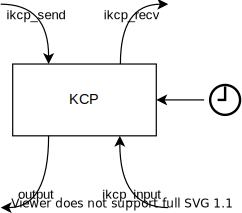
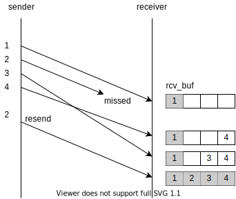
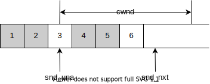
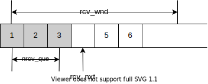
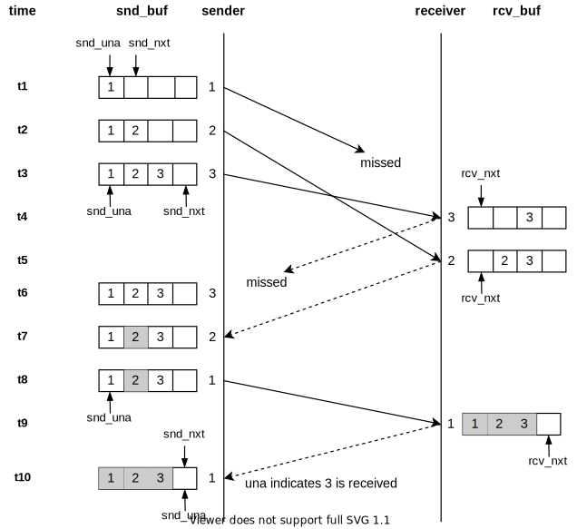
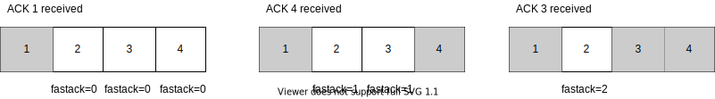

「转」详解 KCP 协议的原理和实现
1. 引言
KCP 是一个快速可靠的 ARQ (Automatic Repeat-reQuest, 自动重传请求) 协议, 采用了不同于 TCP 的自动重传策略, 有着比 TCP 更低的网络延迟. 实际通常使用 KCP over UDP 代替 TCP, 应用在网络游戏和音视频传输中. KCP 的实现短小精悍, 非常适合学习. KCP 的 ARQ 机制与 TCP 类似, 只是部分策略不同, 学习 KCP 也有助于我们理解 TCP. 本文讨论 KCP 的原理和实现, 包括它的 ARQ 机制, 拥塞控制等.
笔者并不想直接贴出大段代码然后逐行分析, 因此本文各节会先用图文介绍 KCP 的各个机制, 然后再展示代码并分析它的实现. KCP 源码的可读性还是比较好的, 建议大家阅读本文的同时也结合 KCP 源码.
我们首先在第 2 节看下 KCP 的各个主要的接口; 接着第 3 节开始介绍 KCP 中的数据结构, 包括报文段, KCP 对象, 队列; 第 4 节开始介绍 KCP 的发送, 接收与重传机制; 第 5 节分析 KCP 的拥塞控制机制; 最后简单做一个总结. 本文的篇幅有些长, 不过其中很多是代码展示, 我认为整体还是不复杂的.
2. 使用接口
我们从 KCP 的使用接口出发. 打开 ikcp.h, 关注这几个接口:
// 一个 ikcpcb 实例代表一个 KCP 连接
typedef struct IKCPCB ikcpcb;
// 创建一个 KCP 实例
ikcpcb* ikcp_create(IUINT32 conv, void *user);
// 释放一个 KCP 实例
void ikcp_release(ikcpcb *kcp);
// 设置下层协议输出回调函数
void ikcp_setoutput(ikcpcb *kcp, int (*output)(const char *buf, int len,
ikcpcb *kcp, void *user));
// 接收数据
int ikcp_recv(ikcpcb *kcp, char *buffer, int len);
// 发送数据
int ikcp_send(ikcpcb *kcp, const char *buffer, int len);
// 时钟更新
void ikcp_update(ikcpcb *kcp, IUINT32 current);
// 下层协议输入
int ikcp_input(ikcpcb *kcp, const char *data, long size);
// flush 发送缓冲区, 会在 ikcp_update 中调用
void ikcp_flush(ikcpcb *kcp);
ikcp_create 创建一个 KCP 实例. 传入的 conv 参数标识这个 KCP 连接, 也就是说, 这个连接发出去的每个报文段都会带上 conv, 它也只会接收 conv 与之相等的报文段. 通信的双方必须先协商一对相同的 conv. KCP 本身不提供任何握手机制, 协商 conv 交给使用者自行实现, 比如说通过已有的 TCP 连接协商.
KCP 是纯算法实现的, 不负责下层协议收发, 内部没有任何系统调用, 连时钟都要外部传进来. 因此我们需要:
- 调用
ikcp_setoutput设置下层协议输出函数. 每当 KCP 需要发送数据时, 都会回调这个输出函数. 例如下层协议是 UDP 时, 就在输出回调中调用sendto将数据发送给对方. 输出回调的user参数等于ikcp_create传入的user参数. - 当下层协议数据到达时, 调用
ikcp_input将数据传给 KCP. - 以一定的频率调用
ikcp_update以驱动 KCP 的时钟.current表示当前时间, 单位为毫秒.
设置好下层协议和时钟后, 就可以调用 ikcp_recv 和 ikcp_send 收发 KCP 数据了.

在深入细节之前, 先简单浏览下这几个函数, 我们就能知道它们大概会做什么:
ikcp_send将数据放在发送队列中等待发送;ikcp_recv从接收队列中读取数据;ikcp_input读取下层协议输入数据, 解析报文段; 如果是数据, 就将数据放入接收缓冲区; 如果是 ACK, 就在发送缓冲区中标记对应的报文段为已送达;ikcp_flush调用输出回调将发送缓冲区中的数据发送出去.
接下来几节我们会逐步深入探索 KCP 的实现细节.
3. 数据结构
3.1 报文段
3.1.1 报文段结构
我们先来看 KCP 的报文段结构. 首先, KCP 的有四种报文段, 或者说四个 Command:
- 数据报文
IKCP_CMD_PUSH - 确认报文
IKCP_CMD_ACK - 窗口探测报文
IKCP_CMD_WASK, 询问对端剩余接收窗口的大小. - 窗口通知报文
IKCP_CMD_WINS, 通知对端剩余接收窗口的大小.
无论是那种报文段, 其结构都是这样的:
0 4 5 6 8 (BYTE)
+---------------+---+---+-------+
| conv |cmd|frg| wnd |
+---------------+---+---+-------+ 8
| ts | sn |
+---------------+---------------+ 16
| una | len |
+---------------+---------------+ 24
| |
| DATA (optional) |
| |
+-------------------------------+
可以看到有这么几个字段:
conv4 字节: 连接标识, 前面已经讨论过了.cmd1 字节: Command.frg1 字节: 分片数量. 表示随后还有多少个报文属于同一个包.wnd2 字节: 发送方剩余接收窗口的大小.ts4 字节: 时间戳.sn4 字节: 报文编号.una4 字节: 发送方的接收缓冲区中最小还未收到的报文段的编号. 也就是说, 编号比它小的报文段都已全部接收.len4 字节: 数据段长度.data: 数据段. 只有数据报文会有这个字段.
首先, 每个数据报文和 ACK 都会带上 sn, 唯一标识一个报文; 发送方发送一个数据报文, 接收方收到后回一个 ACK, 接收方收到 ACK 后根据 sn 将对应的报文标记为已送达; 同时, 每个报文都会带上 una, 发送方也会根据 una 将相应的报文标记已送达.
ts 可以用来估算 RTT (Round-Trip Time, 往返时间), 从而计算出 RTO (Retransmission TimeOut, 重传超时时间). 我们会根据 RTO 确定每个报文的超时时间, 如果报文在超时时间内未被标记为已送达, 就会被重传.
数据包的大小可能会超过一个 MSS (Maximum Segment Size, 最大报文段大小). 这个时候需要进行分片, frg 表示随后的分片数量, 即随后还有多少个报文属于同一个包.
每个报文都会带上 wnd, 告诉对端发送方剩余接收窗口的大小, 这有助于对端控制发送速率. 我们会在第 5 节详细讨论.
3.1.2 实现
在 KCP 的实现中, 使用如下的结构体表示一个 KCP 报文段:
struct IKCPSEG
{
struct IQUEUEHEAD node;
IUINT32 conv;
IUINT32 cmd;
IUINT32 frg;
IUINT32 wnd;
IUINT32 ts;
IUINT32 sn;
IUINT32 una;
IUINT32 len;
IUINT32 resendts;
IUINT32 rto;
IUINT32 fastack;
IUINT32 xmit;
char data[1];
};
除了报文的几个字段之外, 还有如下字段:
node: 链表节点. 我们会在 3.3 节详细讨论.resendts: 重传时间戳. 超过这个时间表示该报文超时, 需要重传.rto: 该报文的 RTO.fastack: ACK 失序次数. 也就是 KCP Readme 中所说的 "跳过" 次数.xmit: 该报文传输的次数.
3.2 KCP 实例
一个 struct IKCPCB 实例表示一个 KCP 连接. 它的字段比较多, 这里先列出每个字段的含义. 不必现在就细看每个字段的含义, 可以先跳过这一段, 需要的时候再返回来查.
struct IKCPCB
{
IUINT32 conv, mtu, mss, state;
IUINT32 snd_una, snd_nxt, rcv_nxt;
IUINT32 ts_recent, ts_lastack, ssthresh;
IINT32 rx_rttval, rx_srtt, rx_rto, rx_minrto;
IUINT32 snd_wnd, rcv_wnd, rmt_wnd, cwnd, probe;
IUINT32 current, interval, ts_flush, xmit;
IUINT32 nrcv_buf, nsnd_buf;
IUINT32 nrcv_que, nsnd_que;
IUINT32 nodelay, updated;
IUINT32 ts_probe, probe_wait;
IUINT32 dead_link, incr;
struct IQUEUEHEAD snd_queue;
struct IQUEUEHEAD rcv_queue;
struct IQUEUEHEAD snd_buf;
struct IQUEUEHEAD rcv_buf;
IUINT32 *acklist;
IUINT32 ackcount;
IUINT32 ackblock;
void *user;
char *buffer;
int fastresend;
int fastlimit;
int nocwnd, stream;
int logmask;
int (*output)(const char *buf, int len, struct IKCPCB *kcp, void *user);
void (*writelog)(const char *log, struct IKCPCB *kcp, void *user);
};
conv: 连接标识, 前面已经讨论过了.mtu,mss: 最大传输单元 (Maximum Transmission Unit) 和最大报文段大小. mss = mtu - 包头长度(24).state: 连接状态, 0 表示连接建立, -1 表示连接断开. (注意state是 unsigned int, -1 实际上是0xffffffff)snd_una: 发送缓冲区中最小还未确认送达的报文段的编号. 也就是说, 编号比它小的报文段都已确认送达.snd_nxt: 下一个等待发送的报文段的编号.rcv_nxt: 下一个等待接收的报文段的编号.ts_recent,ts_lastack: 未使用.ssthresh: Slow Start Threshold, 慢启动阈值.rx_rto: Retransmission TimeOut(RTO), 超时重传时间.rx_rttval,rx_srtt,rx_minrto: 计算rx_rto的中间变量.snd_wnd,rcv_wnd: 发送窗口和接收窗口的大小.rmt_wnd: 对端剩余接收窗口的大小.cwnd: congestion window, 拥塞窗口. 用于拥塞控制.probe: 是否要发送控制报文的标志.current: 当前时间.interval: flush 的时间粒度.ts_flush: 下次需要 flush 的时间.xmit: 该链接超时重传的总次数.nrcv_buf,nsnd_buf,nrcv_que,nsnd_que: 接收缓冲区, 发送缓冲区, 接收队列, 发送队列的长度.nodelay: 是否启动快速模式. 用于控制 RTO 增长速度.updated: 是否调用过ikcp_update.ts_probe,probe_wait: 确定何时需要发送窗口询问报文.dead_link: 当一个报文发送超时次数达到dead_link次时认为连接断开.incr: 用于计算 cwnd.snd_queue,rcv_queue: 发送队列和接收队列.snd_buf,rcv_buf: 发送缓冲区和接收缓冲区.acklist,ackcount,ackblock: ACK 列表, ACK 列表的长度和容量. 待发送的 ACK 的相关信息会先存在 ACK 列表中, flush 时一并发送.buffer: flush 时用到的临时缓冲区.fastresend: ACK 失序fastresend次时触发快速重传.fastlimit: 传输次数小于fastlimit的报文才会执行快速重传.nocwnd: 是否不考虑拥塞窗口.stream: 是否开启流模式, 开启后可能会合并包.logmask: 用于控制日志. 本文不讨论它.output: 下层协议输出函数.writelog: 日志函数. 本文不讨论它.
3.3 队列与缓冲区
我们先来看 snd_queue, rcv_queue, snd_buf 和 rcv_buf 这四个字段. 它们分别是发送队列, 接收队列, 发送缓冲区和接收缓冲区. 队列和缓冲区其实都是循环双链表, 链表节点的类型都是 struct IKCPSEG.
调用 ikcp_send 发送数据时会先将数据加入 snd_queue 中, 然后再伺机加入 snd_buf. 每次调用 ikcp_flush 时都将 snd_buf 中满足条件的报文段都发送出去. 之所以不将报文直接加入 snd_buf 是为了防止一次发送过多的报文导致拥塞, 需要再拥塞算法的控制下伺机加入 snd_buf 中.
调用 ikcp_input 收到的数据解包后会先放入 rcv_buf 中, 再在合适的情况下转移到 rcv_queue 中. 调用 ikcp_recv 接收数据时会从 rcv_queue 取出数据返回给调用者. 这样做是因为报文传输的过程中会出现丢包, 失序等情况. 为了保证顺序, 需要将收到的报文先放入 rcv_buf 中, 只有当 rcv_buf 中的报文段顺序正确才能将其移动到 rcv_queue 中供调用者接收. 如下图所示, rcv_buf 中节点为灰色表示可以移动到 rcv_queue 中. 只有当 2 号报文重传成功后, 才能将 2, 3, 4 号报文移动到 rcv_queue 中.

3.3.1 链表的实现
队列和缓冲区都是循环双链表, 它是由一组宏实现的:
struct IQUEUEHEAD {
struct IQUEUEHEAD *next, *prev;
};
#define IQUEUE_HEAD_INIT(name) { &(name), &(name) }
#define IQUEUE_HEAD(name) \
struct IQUEUEHEAD name = IQUEUE_HEAD_INIT(name)
#define IQUEUE_INIT(ptr) ( \
(ptr)->next = (ptr), (ptr)->prev = (ptr))
#define IOFFSETOF(TYPE, MEMBER) ((size_t) &((TYPE *)0)->MEMBER)
#define ICONTAINEROF(ptr, type, member) ( \
(type*)( ((char*)((type*)ptr)) - IOFFSETOF(type, member)) )
#define IQUEUE_ENTRY(ptr, type, member) ICONTAINEROF(ptr, type, member)
#define IQUEUE_ADD(node, head) ( \
(node)->prev = (head), (node)->next = (head)->next, \
(head)->next->prev = (node), (head)->next = (node))
#define IQUEUE_ADD_TAIL(node, head) ( \
(node)->prev = (head)->prev, (node)->next = (head), \
(head)->prev->next = (node), (head)->prev = (node))
#define IQUEUE_DEL(entry) (\
(entry)->next->prev = (entry)->prev, \
(entry)->prev->next = (entry)->next, \
(entry)->next = 0, (entry)->prev = 0)
#define IQUEUE_IS_EMPTY(entry) ((entry) == (entry)->next)
struct IQUEUEHEAD 为带头节点的循环双链表的一个节点, 它有两个指针, next 指向后一个节点, prev 指向前一个节点; IQUEUE_INIT 初始化时将 next 和 prev 都指向自己, 这标志着链表为空 (见 IQUEUE_IS_EMPTY). IQUEUE_ADD 将节点插入到 head 后面; IQUEUE_ADD_TAIL 将节点插入到 head 前面, 因为是循环链表, 所以插到头节点前面就相当于插到链表末尾. 这些都很好理解.
struct IKCPSEG 中的 node 字段为链表节点. 将一个报文段插入链表时, 实际上是将它的 node 字段插入链表中. 那么从链表中取出节点时怎么将它还原成报文段呢? IQUEUE_ENTRY 这个宏通过链表节点获取包含这个节点的对象. IQUEUE_ENTRY 需要传入节点的指针, 包含这个节点的对象的类型, 以及节点所在的成员. 例如对于链表节点指针 p, 我们要还原成 struct IKCPSEG 指针, 只需调用 IQUEUE_ENTRY(p, struct IKCPSEG, node). 原理是通过 IOFFSETOF 这个宏获取节点成员在结构体中的地址偏移, 然后再用节点的地址减去地址偏移, 就能得到这个结构体对象的地址. &((TYPE *)0)->MEMBER 这个表达式对 NULL 指针执行 -> 操作, 但因为只是取地址而并没有访问那个地址, 所以没有任何问题.
4. 发送, 接收与重传
前面介绍数据结构时我们知道了 ACK 报文为数据报文的确认, 队列和缓冲区的关系. 这一节我们详细讨论 KCP 的整个 ARQ 流程. 首先介绍发送, 接收和重传的整体流程, 然后是 KCP 发送和接收的滑动窗口, 以及它们在发送和接收中的变化情况; 接着会讨论快速重传和 RTO 计算方式; 最后展示 KCP 的代码, 看它具体是如何实现的.
4.1 整体流程
KCP 的整个发送, 接收与重传的流程大体如下:
-
调用
ikcp_send发送数据, 创建报文段实例, 加入snd_queue中. -
ikcp_update会在合适的时刻调用ikcp_flush. -
ikcp_flush会做:- 发送 ACK 列表中所有的 ACK;
- 检查是否需要发送窗口探测和通知报文, 如果需要就发送相应的报文;
- 根据发送窗口大小, 将适量的报文段从
snd_queue移入到snd_buf中; - 将
snd_buf中满足条件的报文段都发送出去. 这里的条件有:- 新加入
snd_buf中, 从未发送过的报文直接发送出去; - 发送过的, 但是在 RTO 内未收到 ACK 的报文, 需要重传;
- 发送过的, 但是 ACK 失序若干次的报文, 需要执行快速重传.
- 新加入
- 根据丢包情况计算 ssthresh 和 cwnd.
这样, 刚才调用
ikcp_send传入的数据就在ikcp_flush中被发送出去了. -
报文到达对端.
-
ikcp_input会被调用, 解析收到的数据:- 所有的报文都有 una 字段, 根据 una 将相应的报文标记为已送达;
- 如果是 ACK 报文, 就将相应的报文标记为已送达;
- 如果是数据报文, 就将它放入
rcv_buf, 然后将rcv_buf中顺序正确的报文移入rcv_queue; 接着将相关信息插入 ACK 列表, 在稍后的ikcp_flush调用中会发送相应的 ACK; - 如果是窗口探测报文, 就标记 "需要发送窗口通知". 在稍后的
ikcp_flush调用中会发送窗口通知报文; - 包括窗口通知报文在内的所有报文都有 wnd 字段, 据此更新
rmt_wnd; - 根据 ACK 失序情况决定快速重传;
- 计算 cwnd.
-
调用
ikcp_recv接收数据, 从rcv_queue中读取数据.
之后 ACK 会返回给发送方, 发送方在 ikcp_input 中解析到 ACK, 将对应的报文标记为已送达, 这就完成了一次发送. 如果发生了丢包, 发送方最终收不到 ACK. 这会导致重传.
发送队列和接收队列确实是队列, 报文总是先进先出的, 因此上面说的诸如 "加入 snd_queue" 和 "从 rcv_queue 中读取", 都是简单的入队出队. 但是发送缓冲区和接收缓冲区就相对复杂些, 下一节我们详细讨论这个问题.
4.2 滑动窗口
发送缓冲区 snd_buf 和接收缓冲区 rcv_buf 中活动的报文都是在滑动窗口之中的. 滑动窗口实际是一个抽象的概念, 不能简单地认为它是缓冲区的一部分, 稍后我们能看到, 接收窗口的一部分是接收队列.
4.2.1 发送
发送窗口的结构如下图所示. 灰色节点表示已送达的报文, 白色节点表示已发送但尚未确认到达的报文. 其中白色节点表示的报文存在于 snd_buf 中, 而灰色节点表示的已确认送达的报文已经从 snd_buf 中删除. 这里还有两个指针: snd_una 指向第一个尚未确认到达的报文, 也就是说在它之前的报文都已确认到达; snd_nxt 指向下一个插入缓冲区的位置. 滑动窗口的起始位置是 snd_una, 大小为 cwnd.

每次 flush 时都会从 snd_queue 中取出报文插入 snd_buf 中 snd_nxt 指向的位置, 然后 snd_nxt 向右移动. KCP 会动态计算窗口大小 cwnd, 当 snd_nxt - snd_una >= cwnd 时, 便不允许新的报文加入 snd_buf. 这时须等报文确认到达, snd_una 向右移动, 方可继续发送. 每次 flush 其实是将发送窗口中的报文尽可能地发送出去. 因此, cwnd 的大小决定了发送速率.
在 KCP 的实现中, snd_buf 是一个报文段链表, 链表中的报文段编号始终递增. 报文段插入 snd_buf 时会追加到链表的尾部, 确认到达的报文段则会从链表中删除.
发送窗口中未确认到达的报文何时重传, 取决于这个报文的 RTO. 报文在一个 RTO 时间内仍未确认到达, 就会重传. 报文的 RTO 初始值会被赋为 rx_rto, 之后每次超时重传, RTO 都会以某种方式增长. KCP 的 RTO 增长速率可配置, 或翻倍, 或翻 0.5 倍. 此外还有快速重传机制, 我们会在 4.3 节中讨论.
4.2.2 接收
接收窗口结构如下图所示. 这里灰色节点表示顺序正确, 已经移动到 rcv_queue 中的报文. 注意下图表示的是 snd_queue 和 snd_buf 的结合体, 灰色节点都在 rcv_queue 中, 其余 rcv_nxt 及其右边的部分为 rcv_buf. 滑动窗口的起始位置为 rcv_queue 的队首, 大小为 rcv_wnd.

每收到一个数据报文, 都会根据它的编号将它插入到 rcv_buf 对应的位置中. 接着检查 rcv_nxt 能否向右移动, 只有当报文的顺序正确且连续才能移动. 在上图的例子中由于 4 号报文的缺失, rcv_nxt 只能处于 4 号位置等待, 5, 6 号报文也不能移动到 rcv_queue 中. 需等到 4 号报文到达后, 才能将 4, 5, 6 号报文一并移动到 rcv_queue 中; 同时 rcv_nxt 会右移到 7 号位置.
nrcv_que 为接收队列的长度. KCP 会通知发送方剩余接收窗口的大小为 rcv_wnd - nrcv_que, 发送方应根据这个值调整 cwnd, 确保发送速率不超过对方的接收速率; 接收方也应该及时读取 rcv_queue 中的数据, 让窗口向右滑动, 以保证有充足的接收窗口. 如果接收到数据报文的编号大于 rcv_nxt + rcv_wnd, 远超窗口之外, 这个报文就会被丢弃.
在 KCP 的实现中, rcv_buf 同样是一个报文段链表, 链表中报文段编号始终递增. 当收到新的报文时, 会根据编号插入到链表中相应的位置中; 顺序正确的报文会从链表头部弹出, 移动到 rcv_queue 中.
回想起 3.1 节中所说的, 每个报文都会带上 una 字段, 表示该报文发送者的接收缓冲区中最小还未收到的报文编号. 不难发现, 这其实就是 rcv_nxt. 因此 KCP 发送的每个报文都会将 una 字段赋值为 rcv_nxt. 这样就有了 ACK + UNA 双重确认机制, 即使 ACK 丢包, 也可以通过稍后的 una 确认报文已送达.
4.2.3 例子
我们举个简单的例子演示整个 ARQ 的流程. 下图中实线箭头表示数据报文, 虚线箭头表示 ACK.

- t1 时刻发送方发送 1 号报文, 1 号报文放入发送缓冲区中,
snd_una指向 1,snd_nxt指向 2. - t2 至 t3 时刻发送方依次发送 2 至 3 号报文,
snd_nxt依次后移. - 1 号报文丢包.
- t4, t5 时刻接收方收到 3 号和 2 号报文, 放入
rcv_buf中; 随后回复 3 号和 2 号 ACK. 此时由于 1 号报文缺失,rcv_nxt始终指向 1. - 3 号 ACK 丢包.
- t7 时刻发送方收到 2 号 ACK, 将 2 号报文标记为已送达. 此时由于 3 号 ACK 丢包, 3 号报文未标记为已送达. 由于 1 号报文未确认送达,
snd_una亦指向 1. - t8 时刻 1 号报文超时, 重传.
- t9 时刻接收方收到 1 号报文, 放入
rcv_buf中; 这时 1, 2, 3 号报文顺序正确,rcv_nxt右移到 4 号位置. 接收方回复 1 号 ACK, 同时带上 una = 4. - t10 时刻发送方收到 1 号 ACK, 将 1 号报文标记为已送达. 同时 una 表明 1, 2, 3 号报文均已送达, 因此也将 3 号报文标记为已送达.
snd_una移动到 4.
4.3 快速重传
除了超时重传, KCP 还有快速重传机制. 假设发送方依次发送了 1, 2, 3, 4 号报文, 随后收到 1, 3, 4 号 ACK. 收到 3 号 ACK 时, 我们知道 2 号 ACK 失序了一次, 收到 4 号 ACK 时, 我们知道 2 号失序了两次. ACK 失序次数越多说明它丢包的概率越大, KCP 会直接重传失序次数过多的报文, 而不用等待其超时.

每个报文的 fastack 字段记录了它检测到 ACK 失序的次数. 每当 KCP 收到一个编号为 sn 的 ACK 时, 就会检查 snd_buf 中编号小于 sn 且未确认送达的报文, 将其 fastack 加一. 我们可以通过配置 fastresend 指定失序多少次就执行快速重传. 每次调用 ikcp_flush 时都会重传 snd_buf 中 fastack 不小于 fastresend 的报文.
报文也不会无限制地执行快速重传. 每个报文的 xmit 字段记录它被传输的次数, KCP 的 fastlimit 字段规定了传输次数小于 fastlimit 的报文才能执行快速重传.
4.4 计算 RTO
每个报文 RTO 的会随着重传次数的增加而增加, 其初始值保存在字段 rx_rto 中. 一个设置得当的 RTO 是保证 ARQ 性能的关键. KCP 计算 RTO 初始值的方法是 TCP 的标准方法, 规定在 RFC 6298 中.
标准方法通过 RTT 计算 RTO. 这是容易理解的: 报文从发出到收到 ACK 经过的时间应为一个 RTT, 如果某个报文在一个 RTT 内未收到 ACK, 说明它很有可能丢包了. 因此 RTO 应该与 RTT 呈正相关, 且应高于 RTT 以容忍一定程度的抖动.
计算过程要维护两个中间变量, srtt 和 rttvar, 每次收到一个 ACK 都能得到一个 RTT, 然后计算更新中间变量, 然后得出 RTO. 具体方法如下:
和 是常数, 取 , 取 . 为计时器粒度, 也就是调用 ikcp_flush 的时间间隔. 这种算法称为指数加权移动平均, srtt 是对一段时间内 RTT 平均值的估计, 新的 srtt 有 取决于旧的 srtt, 取决于当前 RTT; 而 rttvar 是对 RTT 平均偏差的估计, 新的 rttvar 有 取决于旧的 rttvar, 取决于当前偏差. 最终 RTO 等于 RTT 的平均值加上四倍的 RTT 平均抖动值, 并且至少为一个计时器粒度.
srtt 和 rttvar 会按上述方法更新, 但在此之前也需要设置初始值. 标准方法的做法是测得第一个 RTT 时初始化 srtt 和 rttvar, 其值为:
4.5 实现
我们最后再来看 KCP 的代码是如何实现的. 前面几节已经介绍过 KCP 的 ARQ 原理, 这一节就直接展示注释过的 KCP 源码. 代码比较长, 这里适当做精简, 建议读者对照 KCP 源码阅读.
4.5.1 发送
ikcp_send 根据传入的数据, 创建若干个报文段对象, 放入 snd_queue 中.
int ikcp_send(ikcpcb *kcp, const char *buffer, int len)
{
IKCPSEG *seg;
int count, i;
assert(kcp->mss > 0);
if (len < 0) return -1;
if (kcp->stream != 0) {
// 如果是流模式就合并包, 将 buffer 中的数据尽可能地追加到 snd_queue 中的最后一个报文中
...
}
// 计算出分片数量 = buffer 长度 / 最大报文段大小(mss), 向上取整.
if (len <= (int)kcp->mss) count = 1;
else count = (len + kcp->mss - 1) / kcp->mss;
if (count >= (int)IKCP_WND_RCV) return -2;
if (count == 0) count = 1;
// 创建 count 个报文段对象并加入 snd_queue
for (i = 0; i < count; i++) {
int size = len > (int)kcp->mss ? (int)kcp->mss : len;
seg = ikcp_segment_new(kcp, size); // 创建报文段对象
assert(seg);
if (seg == NULL) {
return -2;
}
if (buffer && len > 0) {
memcpy(seg->data, buffer, size); // 复制数据
}
seg->len = size;
seg->frg = (kcp->stream == 0)? (count - i - 1) : 0; // 剩余分片数量
iqueue_init(&seg->node);
iqueue_add_tail(&seg->node, &kcp->snd_queue); // 加入 snd_queue
kcp->nsnd_que++;
if (buffer) {
buffer += size; // buffer 指针后移
}
len -= size;
}
return 0;
}
之后在 ikcp_update 的驱动下, 会调用到 ikcp_flush.
void ikcp_flush(ikcpcb *kcp)
{
IUINT32 current = kcp->current; // 当前时间
char *buffer = kcp->buffer; // 临时缓冲区
char *ptr = buffer;
int count, size, i;
IUINT32 resent, cwnd;
IUINT32 rtomin;
struct IQUEUEHEAD *p;
int change = 0; // 是否执行过快速重传
int lost = 0; // 是否执行过超时重传
IKCPSEG seg;
if (kcp->updated == 0) return;
seg.conv = kcp->conv;
seg.cmd = IKCP_CMD_ACK; // ACK 报文段
seg.wnd = ikcp_wnd_unused(kcp); // 通知对端剩余接收窗口大小为 rcv_wnd - nrcv_que (4.2.2 节)
seg.una = kcp->rcv_nxt; // 将 una 赋值为 rcv_nxt (4.2.2 节)
// seg.frg, seg.len, seg.sn, seg.ts 均赋值为 0
...
// 发送 ACK 列表中所有的 ACK
count = kcp->ackcount;
for (i = 0; i < count; i++) {
size = (int)(ptr - buffer);
if (size + (int)IKCP_OVERHEAD > (int)kcp->mtu) { // buffer 中累计的数据将要大于一个 MTU, 就发送 buffer 中的数据.
ikcp_output(kcp, buffer, size); // 之后会多次出现这段代码, 以 <FLUSH_BUFFER> 代替之.
ptr = buffer;
}
ikcp_ack_get(kcp, i, &seg.sn, &seg.ts); // 从 ACK 列表中取出 ACK 的编号和时间戳
ptr = ikcp_encode_seg(ptr, &seg); // ACK 报文写入 buffer
}
kcp->ackcount = 0;
if (kcp->rmt_wnd == 0) {
// 对端剩余接收窗口大小为 0, 可能需要发送窗口探测报文. 根据 ts_probe 和 probe_wait 确定当前时刻是否需要发送探测报文.
...
} else {
kcp->ts_probe = 0;
kcp->probe_wait = 0;
}
if (kcp->probe & IKCP_ASK_SEND) { // 检查是否需要发送窗口探测报文
seg.cmd = IKCP_CMD_WASK;
<FLUSH_BUFFER>
ptr = ikcp_encode_seg(ptr, &seg); // 报文写入 buffer
}
if (kcp->probe & IKCP_ASK_TELL) { // 检查是否需要发送窗口通知报文
seg.cmd = IKCP_CMD_WINS;
... // 同窗口探测报文
}
kcp->probe = 0;
cwnd = ... // 计算 cwnd
// 将报文从 snd_queue 移动到 snd_buf. snd_nxt - snd_una 不超过 cwnd. (4.2.1 节)
while (_itimediff(kcp->snd_nxt, kcp->snd_una + cwnd) < 0) {
IKCPSEG *newseg;
if (iqueue_is_empty(&kcp->snd_queue)) break; // snd_queue 为空, break
newseg = iqueue_entry(kcp->snd_queue.next, IKCPSEG, node); // 取队首的报文段
iqueue_del(&newseg->node); // 出队
iqueue_add_tail(&newseg->node, &kcp->snd_buf); // 插入 snd_buf
kcp->nsnd_que--;
kcp->nsnd_buf++;
// 给 newseg 的各个字段赋值. 这里作部分省略
newseg->cmd = IKCP_CMD_PUSH;
newseg->sn = kcp->snd_nxt++; // snd_nxt 自增
...
}
// 快速重传, fastresend 为 0 便不执行快速重传
resent = (kcp->fastresend > 0)? (IUINT32)kcp->fastresend : 0xffffffff;
rtomin = (kcp->nodelay == 0)? (kcp->rx_rto >> 3) : 0;
// 将 snd_buf 中满足条件的报文段都发送出去 (4.1 节)
for (p = kcp->snd_buf.next; p != &kcp->snd_buf; p = p->next) {
IKCPSEG *segment = iqueue_entry(p, IKCPSEG, node);
int needsend = 0;
if (segment->xmit == 0) { // 新加入 snd_buf 中, 从未发送过的报文直接发送出去
needsend = 1;
segment->xmit++;
segment->rto = kcp->rx_rto; // RTO 初始为 rx_rto
segment->resendts = current + segment->rto + rtomin; // 重传时间戳
}
else if (_itimediff(current, segment->resendts) >= 0) { // 发送过的, 但是在 RTO 内未收到 ACK 的报文, 需要重传
needsend = 1;
segment->xmit++;
kcp->xmit++; // 超时重传的总次数
// 每超时重传一次, RTO 都增长
if (kcp->nodelay == 0) {
segment->rto += _imax_(segment->rto, (IUINT32)kcp->rx_rto); // RTO 翻倍增长
} else {
IINT32 step = (kcp->nodelay < 2)?
((IINT32)(segment->rto)) : kcp->rx_rto;
segment->rto += step / 2; // RTO 翻 0.5 倍增长
}
segment->resendts = current + segment->rto; // 重传时间戳
lost = 1;
}
else if (segment->fastack >= resent) { // 发送过的, 但是 ACK 失序超过 resent 次的报文, 需要执行快速重传. (4.3 节)
if ((int)segment->xmit <= kcp->fastlimit ||
kcp->fastlimit <= 0) { // 快速重传次数限制
needsend = 1;
segment->xmit++;
segment->fastack = 0;
segment->resendts = current + segment->rto;
change++;
}
}
if (needsend) {
int need;
// 赋值 segment->ts, segment->wnd, segment->una
...
<FLUSH_BUFFER>
ptr = ikcp_encode_seg(ptr, segment); // 报文写入 buffer
if (segment->len > 0) {
memcpy(ptr, segment->data, segment->len); // 报文的数据段也要写入 buffer
ptr += segment->len;
}
if (segment->xmit >= kcp->dead_link) { // 报文传输次数大于一定值, 连接断开
kcp->state = (IUINT32)-1;
}
}
}
// 发送 buffer 中剩余的报文段
size = (int)(ptr - buffer);
if (size > 0) {
ikcp_output(kcp, buffer, size);
}
// 根据丢包情况计算 ssthresh 和 cwnd. 会在第 5 节中讨论
...
}
4.5.2 接收
数据到达会调用 ikcp_input.
int ikcp_input(ikcpcb *kcp, const char *data, long size)
{
IUINT32 prev_una = kcp->snd_una; // 收到报文后, snd_una 可能会向右移动. 这里保存移动前的 snd_una
IUINT32 maxack = 0, latest_ts = 0;
int flag = 0;
...
if (data == NULL || (int)size < (int)IKCP_OVERHEAD) return -1;
while (1) {
// 报文的各个字段
IUINT32 ts, sn, len, una, conv;
IUINT16 wnd;
IUINT8 cmd, frg;
IKCPSEG *seg;
if (size < (int)IKCP_OVERHEAD) break;
... // 调用 ikcp_decode* 解包, 为各个字段赋值.
if (conv != kcp->conv) return -1; // 检查 conv
size -= IKCP_OVERHEAD;
if ((long)size < (long)len || (int)len < 0) return -2;
if (cmd != IKCP_CMD_PUSH && cmd != IKCP_CMD_ACK &&
cmd != IKCP_CMD_WASK && cmd != IKCP_CMD_WINS) // 检查 cmd
return -3;
kcp->rmt_wnd = wnd; // 更新 rmt_wnd
ikcp_parse_una(kcp, una); // 根据 una 将相应已确认送达的报文从 snd_buf 中删除
ikcp_shrink_buf(kcp); // 尝试向右移动 snd_una
if (cmd == IKCP_CMD_ACK) { // ACK 报文
if (_itimediff(kcp->current, ts) >= 0) {
// 这里计算 RTO, _itimediff(kcp->current, ts) 便是 RTT.
// 其计算方法与 4.4 节列出的公式一致, 具体代码不展示了, 读者可自行参阅 KCP 源码.
ikcp_update_ack(kcp, _itimediff(kcp->current, ts));
}
ikcp_parse_ack(kcp, sn); // 将已确认送达的报文 snd_buf 中删除.
ikcp_shrink_buf(kcp); // 尝试向右移动 snd_una
if (flag == 0) { // 这里计算出这次 input 得到的最大 ACK 编号
flag = 1;
maxack = sn;
} else {
if (_itimediff(sn, maxack) > 0) {
maxack = sn;
...
}
}
...
}
else if (cmd == IKCP_CMD_PUSH) { // 数据报文
...
if (_itimediff(sn, kcp->rcv_nxt + kcp->rcv_wnd) < 0) {
ikcp_ack_push(kcp, sn, ts); // 将相关信息 (报文编号和时间戳) 插入 ACK 列表中
if (_itimediff(sn, kcp->rcv_nxt) >= 0) {
seg = ikcp_segment_new(kcp, len);
seg->conv = conv;
... // 赋值各个字段
if (len > 0) {
memcpy(seg->data, data, len);
}
ikcp_parse_data(kcp, seg); // 插入 rcv_buf
}
}
}
else if (cmd == IKCP_CMD_WASK) { // 窗口探测
kcp->probe |= IKCP_ASK_TELL; // 标记需要发送窗口通知报文
}
else if (cmd == IKCP_CMD_WINS) { // 窗口通知
// 什么都不用做, wnd 字段前面已经取得了
}
else {
return -3;
}
data += len;
size -= len;
}
if (flag != 0) {
ikcp_parse_fastack(kcp, maxack, latest_ts); // 检查 snd_buf 中编号小于 maxack 且未确认送达的报文, 将其 fastack 加一
}
... // 计算 cwnd. 会在第 5 节中讨论
return 0;
}
对于 ACK, 会调用 ikcp_parse_ack 将对应已送达的报文从 snd_buf 中删除. 删除之后, 之后的 ikcp_flush 调用中自然不用考虑重传问题了. ikcp_parse_una 的做法与之类似, 这里只展示 ikcp_parse_ack:
static void ikcp_parse_ack(ikcpcb *kcp, IUINT32 sn)
{
struct IQUEUEHEAD *p, *next;
if (_itimediff(sn, kcp->snd_una) < 0 || _itimediff(sn, kcp->snd_nxt) >= 0)
return;
for (p = kcp->snd_buf.next; p != &kcp->snd_buf; p = next) { // 遍历 snd_buf
IKCPSEG *seg = iqueue_entry(p, IKCPSEG, node);
next = p->next;
if (sn == seg->sn) { // 找到对应编号的报文, 将它删除
iqueue_del(p);
ikcp_segment_delete(kcp, seg);
kcp->nsnd_buf--;
break;
}
if (_itimediff(sn, seg->sn) < 0) {
break;
}
}
}
对于数据报文, 则调用 ikcp_parse_data 将其插入 rcv_buf, 然后会尽可能地将顺序正确的报文移入 rcv_queue.
void ikcp_parse_data(ikcpcb *kcp, IKCPSEG *newseg)
{
struct IQUEUEHEAD *p, *prev;
IUINT32 sn = newseg->sn;
int repeat = 0;
// 如果接收到数据报文的编号大于 rcv_nxt + rcv_wnd 或小于 rcv_nxt, 这个报文就会被丢弃. (4.2.2 节)
if (_itimediff(sn, kcp->rcv_nxt + kcp->rcv_wnd) >= 0 ||
_itimediff(sn, kcp->rcv_nxt) < 0) {
ikcp_segment_delete(kcp, newseg);
return;
}
// 在 rcv_buf 中寻找一个合适的位置以便插入
for (p = kcp->rcv_buf.prev; p != &kcp->rcv_buf; p = prev) { // 从后往前遍历
IKCPSEG *seg = iqueue_entry(p, IKCPSEG, node);
prev = p->prev;
if (seg->sn == sn) { // 如果遇到编号相等的, 则是重复报文
repeat = 1;
break;
}
if (_itimediff(sn, seg->sn) > 0) { // 找到第一个编号比它小的
break;
}
}
if (repeat == 0) { // 插入
iqueue_init(&newseg->node);
iqueue_add(&newseg->node, p);
kcp->nrcv_buf++;
} else { // 重复报文直接丢弃
ikcp_segment_delete(kcp, newseg);
}
while (! iqueue_is_empty(&kcp->rcv_buf)) { // rcv_nxt 尝试向后移动, 将顺序正确的报文移动到 rcv_queue 中 (4.2.2 节)
IKCPSEG *seg = iqueue_entry(kcp->rcv_buf.next, IKCPSEG, node);
if (seg->sn == kcp->rcv_nxt && kcp->nrcv_que < kcp->rcv_wnd) { // 保证接收窗口大小不小于 0
iqueue_del(&seg->node);
kcp->nrcv_buf--;
iqueue_add_tail(&seg->node, &kcp->rcv_queue);
kcp->nrcv_que++;
kcp->rcv_nxt++;
} else {
break;
}
}
}
最后接收方调用 ikcp_recv 从 rcv_queue 中读取数据.
int ikcp_recv(ikcpcb *kcp, char *buffer, int len)
{
struct IQUEUEHEAD *p;
int ispeek = (len < 0)? 1 : 0;
int peeksize;
int recover = 0;
IKCPSEG *seg;
assert(kcp);
if (iqueue_is_empty(&kcp->rcv_queue)) return -1;
if (len < 0) len = -len;
peeksize = ikcp_peeksize(kcp); // rcv_queue 中第一个包的大小. 这需要考虑到分片
if (peeksize < 0) return -2;
if (peeksize > len) return -3;
if (kcp->nrcv_que >= kcp->rcv_wnd) recover = 1;
for (len = 0, p = kcp->rcv_queue.next; p != &kcp->rcv_queue; ) { // 从 rcv_queue 取出报文读入 buffer
int fragment;
seg = iqueue_entry(p, IKCPSEG, node);
p = p->next;
if (buffer) {
memcpy(buffer, seg->data, seg->len); // 复制到 buffer 中
buffer += seg->len;
}
len += seg->len;
fragment = seg->frg;
if (ispeek == 0) { // 如果 len 小于 0, 则不消耗 rcv_queue
iqueue_del(&seg->node);
ikcp_segment_delete(kcp, seg);
kcp->nrcv_que--;
}
if (fragment == 0)
break;
}
assert(len == peeksize);
while (! iqueue_is_empty(&kcp->rcv_buf)) { // rcv_queue 空些了, 再尝试从 rcv_buf 中取些报文到 rcv_queue
seg = iqueue_entry(kcp->rcv_buf.next, IKCPSEG, node);
... // 与 ikcp_parse_data 中相同
}
// fast recover
if (kcp->nrcv_que < kcp->rcv_wnd && recover) {
// ready to send back IKCP_CMD_WINS in ikcp_flush
// tell remote my window size
kcp->probe |= IKCP_ASK_TELL;
}
return len;
}
5. 拥塞控制
报文不能无限制地发送. 因为网路容量是有限的, 接收方缓冲区的大小也是有限的; 如果无限制地发送数据, 必然会导致网路和缓冲区无法容纳发送的数据, 从而导致大量丢包. 此外网路中的连接不只一个, 如果所有的连接都无限制地发送报文, 便会导致恶性竞争, 最终网路的拥塞会导致所有人都无法使用. 因此即使是为流速设计的 KCP, 拥塞控制也是不可或缺的.
前面 4.2.1 节讨论了, cwnd 的大小决定了发送速率. 因此, 拥塞控制实际上就是动态计算 cwnd 的过程. KCP 拥塞控制的策略与 TCP 类似, 分为慢启动(Slow Start), 拥塞避免(Congestion Avoidance)和快速恢复(Fast Recovery).
5.1 拥塞控制策略
理想情况下, 发送数据的速率正好等于网路的容量, 然而我们并不知道网路的实际容量. 我们的做法是先将 cwnd 设为 1, 随后平均每经过一个 RTT 时间 cwnd 都翻一倍, 以探测到何时会出现丢包. 这种方法便是慢启动.
在慢启动中 cwnd 会指数增长, 这个过程显然不能一直持续下去. 当 cwnd 超过一个阈值之后, 便会进入拥塞避免阶段. 这个阈值我们称为慢启动阈值(Slow Start Threshold), 通常记作 ssthresh. 在拥塞避免阶段, cwnd 会近似于线性增长.
无论是慢启动还是拥塞避免, 随着 cwnd 的增长, 网路容量会被逐步填满. 网络容量填满之后, 就会不可避免地出现丢包. 这就意味着我们的发送速率过大, cwnd 应该减小了. KCP 称之为丢包退让. 此时有两种策略: 一种是将 ssthresh 置为当前 cwnd 的一半, 然后 cwnd 置为 1, 重新执行慢启动; 另一种也会将 ssthresh 置为当前 cwnd 的一半, 但 cwnd 置为比 ssthresh 稍高的值, 然后进入快速恢复阶段. 快速恢复阶段中, cwnd 会以与拥塞避免相同的方式线性增长. KCP 采用的策略是, 如果发生超时重传, 就进入慢启动; 如果发生快速重传, 就进入快速恢复.
下图展示了拥塞控制中 cwnd 和 ssthresh 的变化情况.
此外无论如何发送速率都不应该超过对端的接收速率, 否则数据一定会超出对端接收缓冲区的容量. 因此 接收方会不断地向对端汇报接收窗口的剩余大小, 发送方会限制 cwnd 不超过 rmt_wnd.
KCP 为流速设计, 在传递一些及时性要求很高的小数据时, 可以选择不执行慢启动和拥塞避免. 此时 cwnd 的大小仅取决于 snd_wnd 和 rmt_wnd 二者的最小值, 其中 snd_wnd 为配置值.
5.2 慢启动
慢启动时, 平均每经过一个 RTT 时间 cwnd 都翻一倍. 实际的做法是, 每收到一个 ACK cwnd 都加一. 初始 cwnd 为 1, 发送 1 个报文段, 随后收到 1 个 ACK, cwnd 加一等于 2; 现在 cwnd 为 2, 发送 2 个报文段, 随后收到 2 个 ACK, cwnd 自增两次等于 4. 以此类推, cwnd 就会指数增长.
慢启动中 cwnd 的变化情况如下图所示.
5.3 拥塞避免和快速恢复
在拥塞避免阶段, 差不多要等当前发送窗口发的报文都确认到达之后, cwnd 才增加 1. 这时的 cwnd 近似于线性增长, 这种增长方式与慢启动的指数增长相比缓慢许多. 拥塞避免阶段的 cwnd 变化情况如下图所示.
在 KCP 的实现中, 拥塞避免阶段的 cwnd 仍然会在每收到一个 ACK 的时候增长, 只不过不是增加 1, 而是增加零点几. KCP 的做法是维护一个中间变量 incr, 其含义可以认为是 cwnd 的 mss 倍. 在拥塞避免阶段, 每收到一个 ACK, incr 都会以如下方式增长:
然后当 incr 累计增加的值超过一个 mss 时, cwnd 增加 1, 保持 incr 与 cwnd 之间的倍数关系. 因为 , 所以有
如果抛开后面的 不看, 实际上相当于每收到一个 ACK, cwnd 都自增 . 这就满足了前面所说的, 要等当前发送窗口发的报文都确认到达之后, cwnd 才增加 1. 事实上 (1) 式去掉后面的 就是 TCP 拥塞避免阶段 cwnd 的增长方式. KCP 在这个基础上加上了 , 让 cwnd 的增长速度比 TCP 稍快一些.
5.4 实现
最后我们来看 KCP 的实现. 这里同样直接展示注释过的代码.
5.4.1 丢包退让
在 ikcp_flush 中检测到丢包, 即出现超时重传或快速重传时, 就执行丢包退让, 调整 cwnd 和 ssthresh, 进入慢启动或快速恢复.
void ikcp_flush(ikcpcb *kcp)
{
...
int change = 0; // 是否执行过快速重传
int lost = 0; // 是否执行过超时重传
...
cwnd = _imin_(kcp->snd_wnd, kcp->rmt_wnd); // cwnd 不超过对端剩余接收窗口大小 rmt_wnd
if (kcp->nocwnd == 0) cwnd = _imin_(kcp->cwnd, cwnd); // 如果设置了 nocwnd, 则 cwnd 只取决于 snd_wnd 和 rmt_wnd
...
if (change) { // 发生快速重传, 进入快速恢复
IUINT32 inflight = kcp->snd_nxt - kcp->snd_una; // 发送窗口中报文的数量, 这个值小于等于 cwnd
kcp->ssthresh = inflight / 2; // ssthresh 置为 inflight 的一半
if (kcp->ssthresh < IKCP_THRESH_MIN)
kcp->ssthresh = IKCP_THRESH_MIN;
kcp->cwnd = kcp->ssthresh + resent; // cwnd 置为比 ssthresh 稍高的值, resent 等于 fastresend
kcp->incr = kcp->cwnd * kcp->mss; // incr 为 cwnd 的 mss 倍
}
if (lost) { // 发生超时重传, 进入慢启动
kcp->ssthresh = cwnd / 2; // ssthresh 置为 cwnd 的一半
if (kcp->ssthresh < IKCP_THRESH_MIN)
kcp->ssthresh = IKCP_THRESH_MIN;
kcp->cwnd = 1; // cwnd 置为 1, 进入慢启动
kcp->incr = kcp->mss;
}
if (kcp->cwnd < 1) {
kcp->cwnd = 1;
kcp->incr = kcp->mss;
}
}
5.4.2 计算 cwnd
ikcp_input 中收到 ACK 时会以某种方式增加 cwnd, 取决于当前是慢启动还是拥塞避免.
int ikcp_input(ikcpcb *kcp, const char *data, long size)
{
...
if (_itimediff(kcp->snd_una, prev_una) > 0) { // 收到了能让 snd_una 移动的 ACK
if (kcp->cwnd < kcp->rmt_wnd) { // cwnd 不超过 rmt_wnd
IUINT32 mss = kcp->mss;
if (kcp->cwnd < kcp->ssthresh) { // cwnd 小于 ssthresh, 慢启动
kcp->cwnd++; // cwnd 增加 1
kcp->incr += mss;
} else {
if (kcp->incr < mss) kcp->incr = mss;
kcp->incr += (mss * mss) / kcp->incr + (mss / 16); // 即 5.3 节中的 (1) 式
if ((kcp->cwnd + 1) * mss <= kcp->incr) { // 当 incr 累计增加的值超过一个 mss 时, cwnd 增加 1
kcp->cwnd++;
}
}
if (kcp->cwnd > kcp->rmt_wnd) { // 保持 cwnd 不超过 rmt_wnd
kcp->cwnd = kcp->rmt_wnd;
kcp->incr = kcp->rmt_wnd * mss;
}
}
}
return 0
6. 总结
笔者一直对 KCP 这个仅用一千多行实现的 ARQ 协议很感兴趣, 直到最近才花时间仔细阅读了 KCP 的源码, 再结合找到的一些资料, 弄清楚了它的原理. 目前互联网上详细讲解 KCP 的文章比较少, 对其中的一些重要实现细节也少有涉及. 笔者大学时的计算机网络课程也没有深入探讨 TCP 的一些细节. 所以趁此机会在这篇文章中较为全面深入地探讨了 KCP 协议的实现原理, 同时这也是 ARQ 协议的原理, 一方面加深自己的学习效果, 另一方面也希望对大家有所帮助.
参考资料:
- KCP 源码剖析
- TCP/IP 详解 卷1: 协议, 机械工程出版社